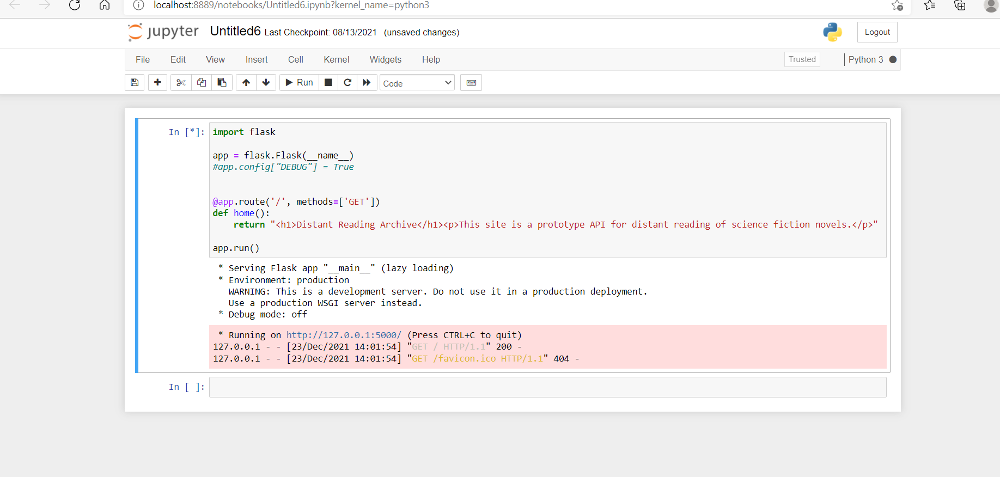
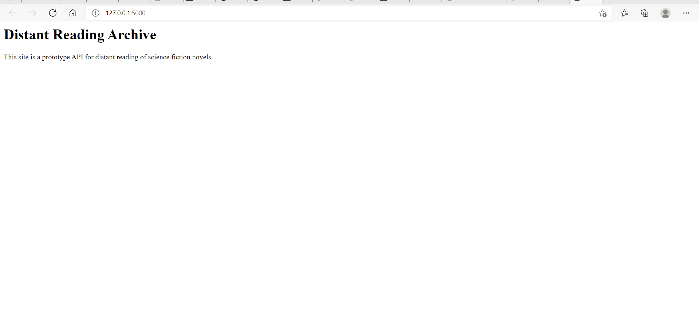
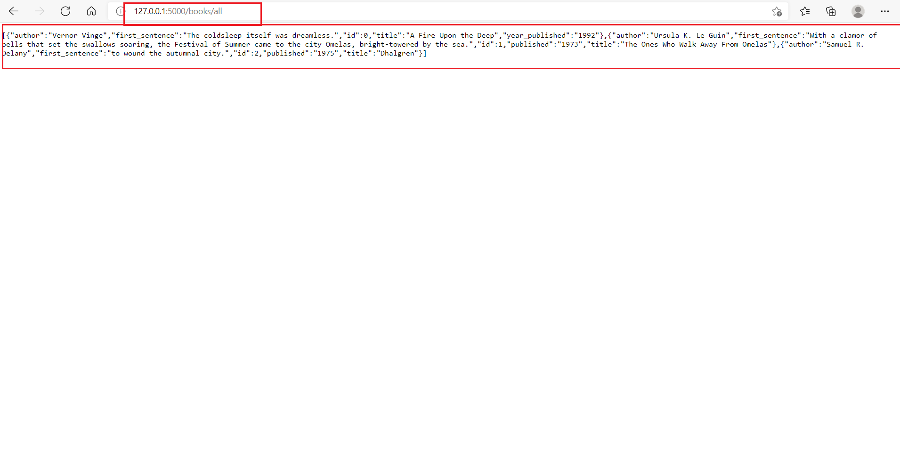
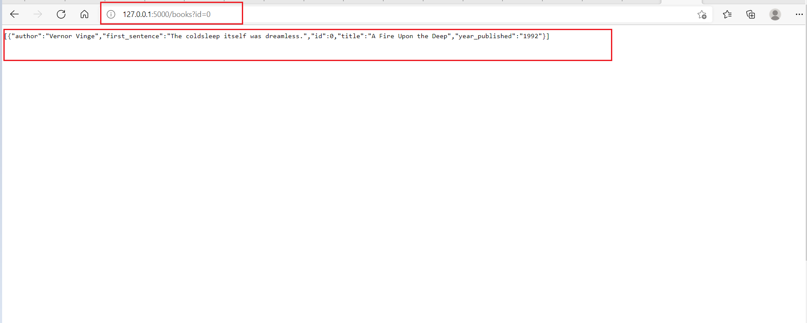

Learn what an API is and when you should use one.
Learn how to build a web API that returns data to its users.
In programming more generally, the term API, short for Application Programming Interface, refers to a part of a computer program designed to be used or manipulated by another program.
Computer programs frequently need to communicate amongst themselves or with the underlying operating system, and APIs are one way they do it.
A web API allows for information or functionality to be manipulated by other programs via the internet.
For example, with Twitter’s web API, you can write a program in a language like Python or Javascript that can perform tasks such as favoriting tweets or collecting tweet metadata.
In general, consider an API if:
Your data set is large, making download via FTP unwieldy or resource-intensive.
Your users will need to access your data in real time, such as for display on another website or as part of an application.
Your data changes or is updated frequently.
Your users only need access to a part of the data at any one time.
Your users will need to perform actions other than retrieve data, such as contributing, updating, or deleting data.
When using or building APIs, you will encounter these terms frequently:
HTTP (Hypertext Transfer Protocol) is the primary means of communicating data on the web. HTTP implements a number of “methods,” which tell which direction data is moving and what should happen to it. The two most common are GET, which pulls data from a server, and POST, which pushes new data to a server.
URL (Uniform Resource Locator) - An address for a resource on the web, such as https://programminghistorian.org/about. A URL consists of a protocol (http://), domain (programminghistorian.org), and optional path (/about). A URL describes the location of a specific resource, such as a web page. When reading about APIs, you may see the terms URL, request, URI, or endpoint used to describe adjacent ideas.
JSON (JavaScript Object Notation) is a text-based data storage format that is designed to be easy to read for both humans and machines. JSON is generally the most common format for returning data through an API, XML being the second most common.
Flask is a web framework for Python, meaning that it provides functionality for building web applications, including managing HTTP requests and rendering templates
Flask maps HTTP requests to Python functions.
Let us understand this with a small example
If you have installed jupyter notebook . Create a new notebook and paste these lines of code
less
import flask
app = flask.Flask(__name__)
@app.route('/', methods=['GET'])
def home():
return "<h1>Distant Reading Archive</h1><p>This site is a prototype API for distant reading of science fiction novels.</p>"
app.run()

Follow the link above, http://127.0.0.1:5000/, using your web browser to see the running application:
In this case, we’ve mapped one URL path (‘/’) to one function, home. When we connect to the Flask server at http://127.0.0.1:5000/, Flask checks if there is a match between the path provided and a defined function. Since /, or no additional provided path, has been mapped to the home function, Flask runs the code in the function and displays the returned result in the browser.
In this case, the returned result is HTML markup for a home page welcoming visitors to the site hosting our API.
The process of mapping URLs to functions is called routing.
scheme
@app.route('/', methods=['GET'])
syntax is the part of the program that lets Flask know that this function, home, should be mapped to the path /. The methods list (methods=['GET']) is a keyword argument that lets Flask know what kind of HTTP requests are allowed.
Below are brief explanations of the other components of the application:
import flask — Imports the Flask library, making the code available to the rest of the application.
app = flask.Flask(name) — Creates the Flask application object, which contains data about the application and also methods (object functions) that tell the application to do certain actions. The last line, app.run(), is one such method.
app.config["DEBUG"] = True — Starts the debugger. With this line, if your code is malformed, you’ll see an error when you visit your app. Otherwise you’ll only see a generic message such as Bad Gateway in the browser when there’s a problem with your code.
app.run() — A method that runs the application server.
Now that we have a running Flask application and know a little about what Flask does, we’re finally ready to implement a small API with data that we’ll define right in our application.
We’ll be adding our data as a list of Python dictionaries. Dictionaries in Python group pairs of keys and values, like this:
scheme
{
'key': 'value',
'key': 'value'
}
The key identifies the type of information represented, such as title or id. The value is the actual data. For example, a short telephone book might take this format:
scheme
[
{
'name': 'Alexander Graham Bell',
'number': '1-333-444-5555'
},
{
'name': 'Thomas A. Watson',
'number': '1-444-555-6666'
}
]
The above phone book is a list of two dictionaries. Each dictionary is a phone book entry consisting of two keys, name and number, each paired with a value that provides the actual information.
Here we are creating a list of dictionaries. Each dictionary will contain ID number, title, author, first sentence, and year of publication for each book.
We will add 3 route methods
@app.route('/', methods=['GET']) which will map to method home which will return a html response
@app.route('/books/all', methods=['GET']) which will map to method api_all returning all book information as a json response.
@app.route('/books', methods=['GET']) which will map to method api_id() filterning and returning book information with respect to an id.
scheme
import flask
from flask import request, jsonify
app = flask.Flask(__name__)
# Create some test data for our catalog in the form of a list of dictionaries.
books = [
{'id': 0,
'title': 'A Fire Upon the Deep',
'author': 'Vernor Vinge',
'first_sentence': 'The coldsleep itself was dreamless.',
'year_published': '1992'},
{'id': 1,
'title': 'The Ones Who Walk Away From Omelas',
'author': 'Ursula K. Le Guin',
'first_sentence': 'With a clamor of bells that set the swallows soaring, the Festival of Summer came to the city Omelas, bright-towered by the sea.',
'published': '1973'},
{'id': 2,
'title': 'Dhalgren',
'author': 'Samuel R. Delany',
'first_sentence': 'to wound the autumnal city.',
'published': '1975'}
]
@app.route('/', methods=['GET'])
def home():
return '''<h1>Distant Reading Archive</h1>
<p>A prototype API for distant reading of science fiction novels.</p>'''
@app.route('/books/all', methods=['GET'])
def api_all():
return jsonify(books)
@app.route('/books', methods=['GET'])
def api_id():
# Check if an ID was provided as part of the URL.
# If ID is provided, assign it to a variable.
# If no ID is provided, display an error in the browser.
if 'id' in request.args:
id = int(request.args['id'])
else:
return "Error: No id field provided. Please specify an id."
# Create an empty list for our results
results = []
# Loop through the data and match results that fit the requested ID.
# IDs are unique, but other fields might return many results
for book in books:
if book['id'] == id:
results.append(book)
# Use the jsonify function from Flask to convert our list of
# Python dictionaries to the JSON format.
return jsonify(results)
app.run()
Here when you give the url
http://127.0.0.1:5000/books/all
you will be able to view the response showing all books . 
Further if you want to make a specific request, you need to add the filtering criteria like for example in this case id
the url will be as follows http://127.0.0.1:5000/books?id=0 you will be able to view results with respect to id =0 as follows
Note :Here the response is a json response.
| Date | Version | Changed by | Change Description |
|---|---|---|---|
| 2021-12-23 | 0.1 | Lakshmi Holla, Malika Singla | Initial Version |